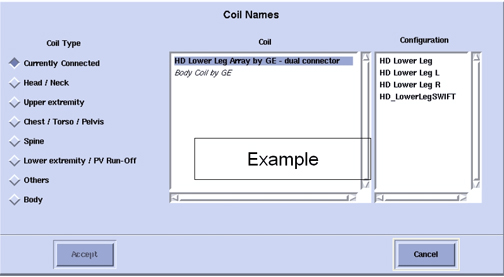
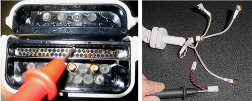
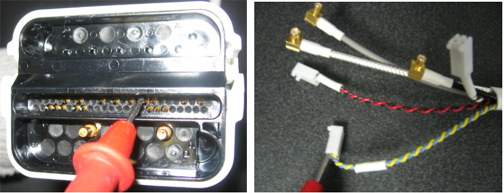

Operating Documentation
Direction 5670006, Rev# 1
Discovery MR750w GEM Service Methods
Module Version 2.0, Version Date 3/3/08
Operating Documentation |
| Required Persons | Procedure |
| 1 | 30 |
The following tips can be used to troubleshoot common problems with the HD 3.0T Shoulder Coil.
Tools and Test Equipment
Digital Volt Meter
Phantom (2359877)
Phantom Positioner (U1-150412)
Required Conditions
The following coil configuration names must be installed to run the SNR tool:
HD SHOULDER
HD ShoulderServ
Problem:
You are unable to pre-scan or are scanning and yet receiving no signal.
Possible Solution:
Verify the green light above the legacy port is illuminated. This indicates the coil is properly plugged into the system.
Verify that the system has correctly detected the coil by checking in the “Currently Connected” in the gui to select coils in Rx as shown in the example in Illustration 1.
Illustration 1: “Currently Connected” Coils Window In The Scan Screen

Verify that the landmark is correct, see 3.0T HD Shoulder Array Setup for Coil SNR Test.
Verify that the scan locations and any FOV offsets are correct.
Perform a continuity check on the output cable (Section 7). The continuity check must be performed by a GE authorized Service Engineer.
Verify that the coil is positioned with the cable exiting towards the bore.
Verify that the cable is not looped or crossed.
If you still cannot get a signal, try to scan (transmit and receive) with the body coil. For this test, be sure to remove the imaging coil from the magnet bore before you scan with the body coil. If you still receive no signal the problem probably lies with the MR system. If the scan completes successfully, there is probably a problem with the shoulder coil. Contact GE for further assistance. If you are unable to scan with the substitute coil, there may be a system problem related to this particular coil type.
Problem:
Poor IQ, shaded images, or if SNR fails
Possible Solution:
Perform a continuity check on the external cable (section 4.4). The continuity check must be performed by a GE authorized Service Engineer.
Verify that there are no loops in the cables.
Verify that there are no metal or ferromagnetic objects close to the coil, patient or magnet (i.e., safety pin, hair pin).
Verify that the coil is properly positioned.
Verify that your center frequency is within the frequency adjustment range for your system.
Verify that the R1, R2 and TG values from the pre-scan are within normally expected ranges.
If you have not done so already, perform the coil Quality Assurance test (refer to Operator’s Manual 2412515). If the values you obtain do not fall within normal operating parameters, investigate this further by performing a phantom scan with the body coil. For this test, be sure to remove the imaging coil from the magnet bore before you scan with the body coil. If you still have the same problems, there is probably an MR system problem. If the body coil scan is satisfactory, acquire a scan using another coil of the exact same type (receive-only, phased array) and the same system coil selection. If the image quality is visibly improved, there may be a problem with the shoulder coil. Contact GE for further assistance. If the image quality still suffers, there may be a system problem related to imaging with this type of coil.
Problem:
There is a black line or signal void on the image.
Possible Solution:
Verify that there is no metal present in the area being scanned in or on the patient.
Visual check.
Before removing the cable assembly from the coil, visually inspect all coaxial connectors and pins on the coil connector. Illustration 2 shows the pin layouts of the system end coil connector. The connector of the shoulder coil has 9 pins in column B, 8 pins in column C, 3 RF coaxial connectors in D2, D4 and D6, If there are any broken, deformed or recessed pins or coaxial connectors, perform Cable Replacement.
| NOTE: | Under no circumstances should the continuity of the center pin of the coax connectors be measured. They may be extremely fragile when improper tools are used. |
Illustration 2: Hypertronics Connector

Check For Continuity Of Dc Lines In The External Cable.
Step 1 - Remove the cable assembly from the coil as described in Cable Replacement.
Step 2 - There are three pins in column B (B11, B13, B15 see Illustration 2) connecting to DC wires of the cable. Illustration 3 shows these pins and corresponding DC wires. Use a Digital Volt Meter (DVM) to check the resistance between the pin in column B and the corresponding DC wire (see Table 1). The resistance should be 11.0 +/- 1.0 ohm. If any resistance reading is not within this range, perform Cable Replacement.
Table 1: Pins And Connected DC Wires
| Pin in column B | 11 | 13 | 15 |
| DC wire color | Red | Blue | Brown |
| DC bias of the system | MC2 | MC4 | MC6 |
Illustration 3: Measure The Resistance Of The DC Line

Step 3 - Pin 9 in column B (see Illustration 2) connects to yellow, white and black DC wires of the cable. Use a Digital Volt Meter (DVM) to check the resistance between Pin 9 in column B and all yellow, white and black DC wires (see Illustration 4). The resistance should be 1.1 ± 0.5 ohm for yellow and white wires, 0.4 ± 0.3 ohm for black wire and If any resistance reading is not within this range, perform Cable Replacement.
Illustration 4: Measure the resistance of the DC return line

Step 4 - Check if any pin from B11, B13 and B15 is shorted to the ground. The outside conductor of a coaxial connector in Row D can be used as ground. If any pin is shorted to ground, perform Cable Replacement.
Check For Continuity Of The Preamp Bias
Pin 21 in row C is connected to three RF cables. The system supplies the preamp bias voltage through Pin C21 and RF cables to the coil. Referring to Illustration 2, find Pin 21 in Row C. Use a DVM to check resistance between Pin C21 and the central pin of the SMB connector at the end of each RF cable (see Illustration 5). The resistance should be 11.0 ± 1.0 ohm. If any resistance reading is not within this range, perform Cable Replacement.
Illustration 5: Measure The Resistance Of The Preamp Bias Line